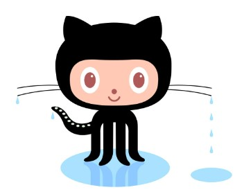

All About GitHub
- Q: What is a version control system?
A: Version control, also known as source control, is the practice of tracking and managing changes to software code. Version control systems are software tools that help software teams manage changes to source code over time.
- Q: What is a Git?
A: A distributed version control system that tracks changes in any set of computer files, usually used for coordinating work among programmers collaboratively developing source code during software development.
- Q: What is the difference between Git and Github?
A: While Git is a tool that's used to manage multiple versions of source code edits that are then transferred to files in a Git repository, GitHub serves as a location for uploading copies of a Git repository.
- Q: Who started Github and how was it started?
A: The GitHub service was developed by Chris Wanstrath, P. J. Hyett, Tom Preston-Werner, and Scott Chacon using Ruby on Rails, and started in February 2008. Wanstrath and Preston-Werner needed GitHub for their own work, and so they developed their tool out of necessity. The two men quickly identified a major problem in their work—forking code branches and collaborating on programming projects—and devised a solution that met their needs.
- Q: What company owns it now?
A: Git has remained an open-source tool since it was first released in 2005. To this day, it is maintained by the Linux Foundation as part of the open-source ecosystem of tools and technologies (the Linux founder also created Git). By contrast, GitHub was launched as a company in 2008 and acquired by Microsoft in 2018.
- Q: How much does a Github account cost?
A: GitHub offers a free account with the basics for individuals. For teams they offer advanced collaboration for $44/year. At the Enterprise level they offer added security, compliance, and flexible deployments for $231/year.
- Q: What is the Octocat?
A: The Octocat is the mascot of the source-code hosting service GitHub

Git/Github Terms:
- Repository: A repository contains all of your project's files and each file's revision history. You can discuss and manage your project's work within the repository.
- Commit: A commit, or "revision", is an individual change to a file (or set of files). When you make a commit to save your work, Git creates a unique ID that allows you to keep record of the specific changes committed along with who made them and when.
- Fork: A fork is a new repository that shares code and visibility settings with the original “upstream” repository. Forks are often used to iterate on ideas or changes before they are proposed back to the upstream repository, such as in open source projects or when a user does not have write access to the upstream repository.
- Push: To move changes from the local repository to the remote. Pushing is how you transfer commits from your local repository to a remote repo.
- Pull Requests: Let you tell others about changes you've pushed to a branch in a repository on GitHub. Once a pull request is opened, you can discuss and review the potential changes with collaborators and add follow-up commits before your changes are merged into the base branch.
- Workflows: A workflow is a configurable automated process that will run one or more jobs. Workflows are defined by a YAML file checked in to your repository and will run when triggered by an event in your repository, or they can be triggered manually, or at a defined schedule.
- Issues: Issues let you track your work on GitHub, where development happens. When you mention an issue in another issue or pull request, the issue's timeline reflects the cross-reference so that you can keep track of related work. To indicate that work is in progress, you can link an issue to a pull request.
- Raw Button: Enables you to view or copy the raw content of a file without any styling.
- Blame Button: The blame button is used to examine the contents of a file line by line and see when each line was last modified and who the author of the modifications was.